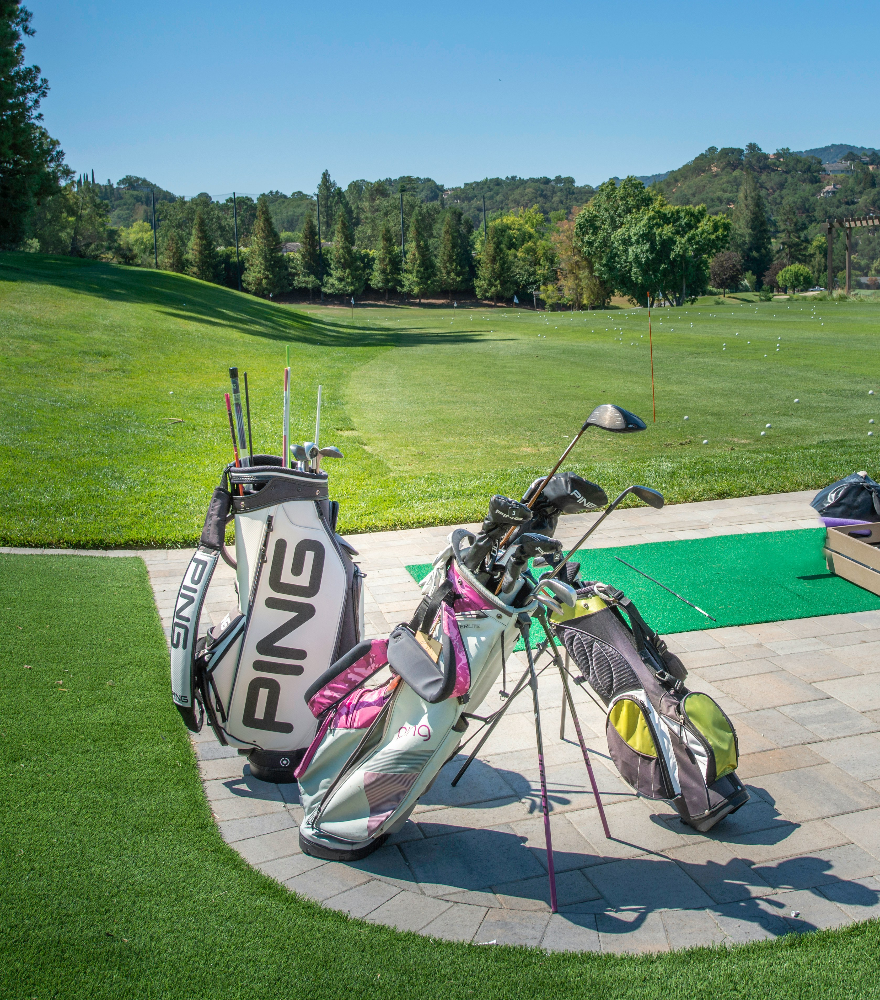

Essential Equipment
As a beginner, you don't need 14 clubs right away...

Common Clubs
- Driver - Long tee shots
- Irons - Approach shots
- Putter - Rolling the ball
Common Golf Clubs and Their Uses
- Driver - For long tee shots
- Fairway woods/Hybrids - Versatile for distance
- Irons - For approach shots to the green
- Wedges - For short shots and bunkers
- Putter - For rolling the ball on the green
Quick Steps to Start Playing Golf
- Get a beginner club set or borrow some
- Visit a driving range to practice
- Take a lesson from a pro
- Play a par-3 course first
- Have fun and be patient!